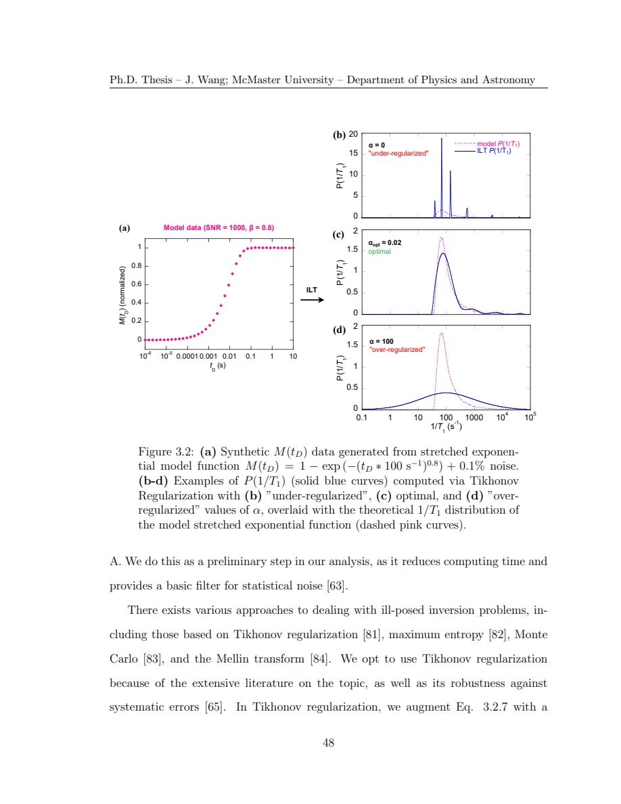

Wang · supplied source 2024 · chapter unit
3 · From recoveries to a log-rate distribution
ILT needs a forward kernel and a stable constrained inversion, even when peak count is left open.
The question: What must be assumed to infer P(1/T₁)?
Before you start: the terms you need
- Quantum spin liquid candidate: a material tested against a quantum-disordered model; a null ordering signal is insufficient identification.
- K: local resonance shift, sensitive to a coupling-weighted static susceptibility.
- 1/T₁: recovery rate that samples fluctuations in the probe frequency window.
- ILT: constrained, regularized inference of a relaxation-rate distribution from recovery data.
- log-rate density: probability is the area in d log₁₀(1/T₁), not peak height.
See → explain → check
Follow the idea in 2 pictures.
Picture 1 / 2
Forward and inverse are different operations
Look for: Rates generate a recovery through the known kernel; inversion must contend with noisy incomplete information.
Swipe across the picture to read every label, or enlarge it below.
- Nonnegative rates
- Kernel + sampled times
- Measured recovery
Read left-to-right as the forward operation; recovering the first box from the last is ill posed.
An inverse answer remains conditional on the acquisition.
Check the original: Original PDF p. 59 · Original PDF p. 60 · Original PDF p. 61
Picture 2 / 2
Balance noise against missing structure
Look for: An overfit distribution and an oversmoothed one can both mislead.
Swipe across the picture to read every label, or enlarge it below.
- Too little α
- Balanced checks
- Too much α
Qualitative outcomes, not calibrated resolution curves.
A fit residual alone cannot establish every component.
Check the original: Original PDF p. 62 · Original PDF p. 63
Explain it back.
Try answering aloud before opening the explanation.
What are the bin weights?
They are density times log-bin width, with a chosen total-signal or probability normalization. They are not density per linear rate.
Is ILT assumption-free?
No. It assumes a recovery kernel and represented window, positivity, independently relaxing populations and a way to stabilize noisy inversion.
Go deeper Follow the full argument
The distribution has a measure
The measured recovery is an integral over the different independently relaxing nuclei. The thesis defines its density on a logarithmic rate axis because rates span orders of magnitude. Probability or signal weight belongs to P(R)d log₁₀R. A tall narrow peak can have less integrated weight than a broad lower peak. The source’s initial distribution integral equals equilibrium signal; normalized distributions are then used when discussing fractions. Distinguish that normalization from the raw frequency-dependent signal, which is necessary when assembling a two-dimensional map. Comparing areas after separately normalizing all frequencies to one would discard information about the line shape.
Original PDF p. 55 · Original PDF p. 56 · Original PDF p. 59 · Original PDF p. 60
Why fitting one rate can hide a second environment
A single exponential assumes one rate. A stretched exponential encodes a particular broad distribution through a characteristic rate and β, and reducing β broadens that implied family. Neither parameter is a universal average or a direct count of local environments. A double-exponential fit assumes two components beforehand. ILT instead represents a nonnegative set of log-rate bins and asks which weights reproduce the recovery under the stated kernel. This removes a prescribed peak count but retains independent relaxation, finite-rate support, a preparation factor and noise assumptions. The thesis’s sampling typically has fewer delay points than represented rate bins, making stable inversion a central issue rather than a numerical detail.
Original PDF p. 57 · Original PDF p. 58 · Original PDF p. 59 · Original PDF p. 60 · Original PDF p. 61
What the Tikhonov term actually penalizes
The source minimizes a residual plus α‖P‖² subject to positivity. This is a penalty on the weight-vector norm, not an explicit derivative smoothing penalty. It tends to distribute weights rather than allow unstable isolated spikes; nevertheless the artificial broadening depends on discretization, α and signal quality. Small α can produce spikes that track noise, while large α can merge or smear components. The source illustrates both failures with known synthetic data. Treat recovered width as an analysis-dependent observation until its stability is checked. A good inverse result should be evaluated through forward reconstruction and changes in relevant acquisition and inversion choices.
Original PDF p. 61 · Original PDF p. 62 · Original PDF p. 63
Translate the mathematics Essential equations and their meaning
M = KP + E; P ≥ 0
Symbols: M: sampled recovery vector; K: transition-specific recovery kernel; P: nonnegative log-rate bin weights; E: noise.
The rate histogram is inferred conditional on K, acquisition times and the represented rate range.
Pα = arg min(P ≥ 0) {‖M − KP‖² + α‖P‖²}
Symbols: α: positive regularization strength; ‖·‖: Euclidean norm.
This source uses a norm penalty on the weights, not a derivative roughness penalty. Its artificial broadening must not be mistaken for a measured intrinsic width.
Read the evidence Guided original source pages

Original PDF p. 62
What the evidence supports—and where it stops
- Density, weights and total intensity must be normalized consistently.
Source version, reading coverage and preservation
All substantive text in Chapters 1–7, the reprinted research article and numerical appendices read; original working kernels, equations and key result figures visually checked.
Reviewed body pages: 15, 16, 17, 18, 19, 20, 21, 22, 23, 24, 25, 26, 27, 28, 29, 30, 31, 32, 33, 34, 35, 36, 37, 38, 39, 40, 41, 42, 43, 44, 45, 46, 47, 48, 49, 50, 51, 52, 53, 54, 55, 56, 57, 58, 59, 60, 61, 62, 63, 64, 65, 66, 67, 68, 69, 70, 71, 72, 73, 74, 75, 76, 77, 78, 79, 80, 81, 82, 84, 85, 86, 87, 88, 89, 90, 91, 92, 93, 94, 95, 96, 97, 98, 99, 100, 101, 102, 103, 104, 105, 106, 107, 108, 109, 110, 111, 112, 113, 114, 115, 116, 117, 118, 119, 120, 121, 122, 123. Personal acknowledgements omitted from teaching content. Bibliographies and external supplements not independently re-read; only material actually present in the thesis is covered.
Source SHA-256: 80ad8aaad2ce3f48320bef046c30907939f8018990292aa5ebb7e5269d912da2. Original file bytes preserved locally; public scientific page images are rendered from that source.
Thesis - Wang - 2024 - Disordered spin liquids - NMR and inverse Laplace analysis.pdf